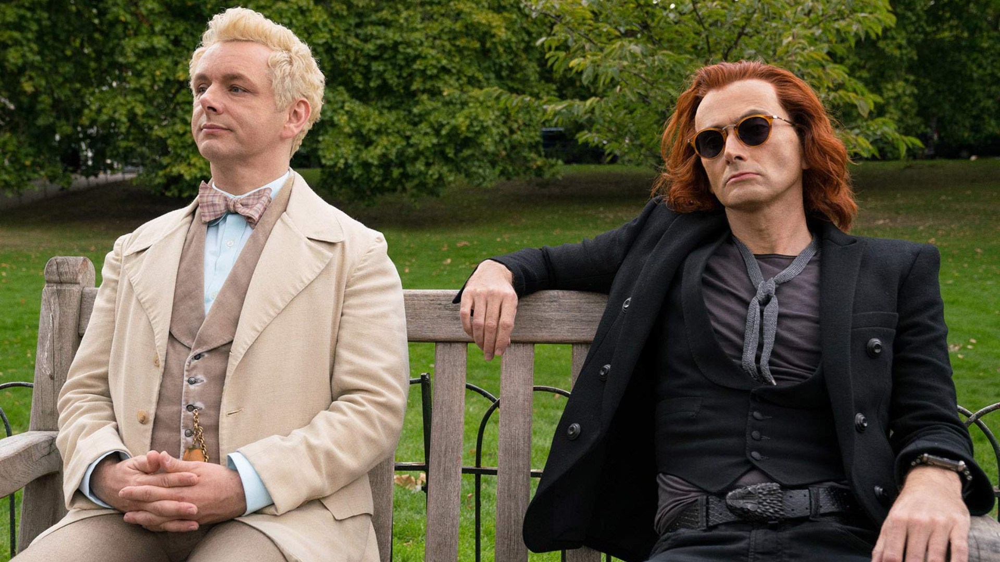
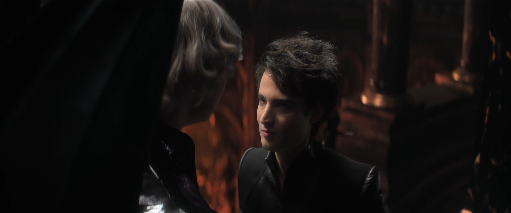
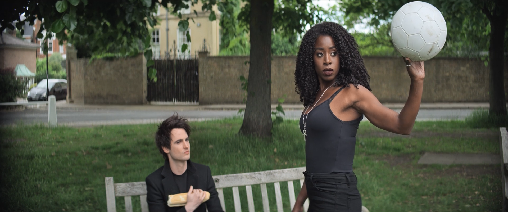
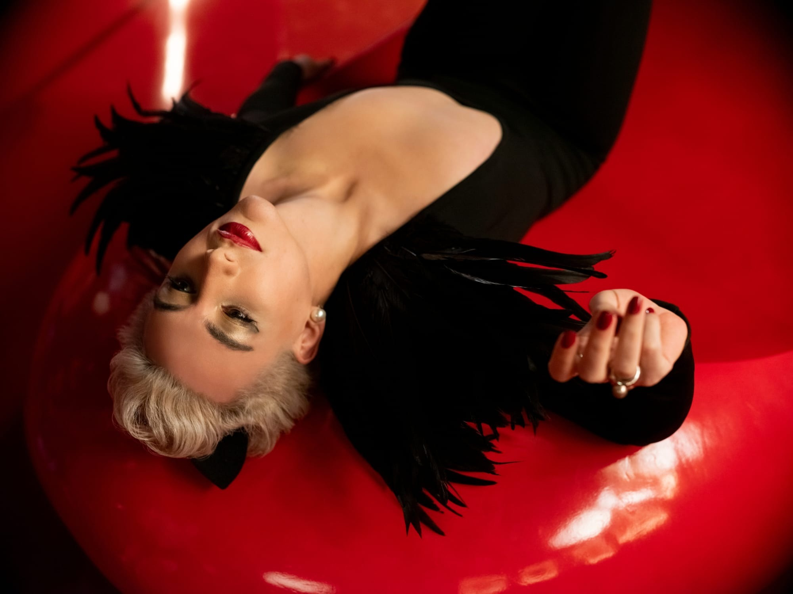

Last semester, when our English teacher asked us to write a book review, I was in a dilemma. What book would I choose? I wasn't my 12 year-old self, who read at least 2 books a week. I was now a tired 20 year old, who couldn't finish a book in 6 months (believe me I tried). Anyways, after much searching, I finally found a book which seemed to be very enjoyable: Good Omens by Neil Gaiman and Terry Pratchett.
I'd already watched the show, and it was by far, one of the best shows I've ever watched. So, I had high expectations for this book. To my utter surprise, the book surpassed almost all of my expectations.

So when I first heard another of Neil Gaiman's works, The Sandman, was being adapted, I was way more than excited to watch it. And just like that, the show too, was even more excellent than what my feeble mind had imagined. Every episode feels like a different setup, with each more interesting than the other.
The Sandman, and many of you will agree with me, is one of the best comic book shows ever. The visuals are grand, the cast is excellent and the stories have been portrayed beautifully. Even though I have not read the comics yet, I have seen numerous people say the show is honest towards the material it's adapted from.

Tom Sturridge as Morpheus, with his tall lanky body and his deep voice, is literally the epitome of perfect casting. His always brooding face makes Dream such a formidable character, and his lopsided smile at times makes us forget about all the atrocities this man has committed (sending your lover to hell because she refused to accept you is a bit too much, yeah).
Not mentioning Gwendoline Christine (as hottest Lucifer in Netflix!), Mason Alexander Park's sultry aura as
Desire, the way Jenna Coleman devoured her limited screentime, and Boyd Holdbrook's absolutely menacing yet very sexy Corinthian, would honestly be a crime. My favourite, however, was the portrayal of
Death by Kirby Howell-Baptiste. She's in only one episode (episode 6, please go watch it immediately!!), yet the storyline, the different light death is shown in made my heart warm.

Episodes 4,5, and 6 back to back was an experience made in heaven. I didn't even know such genius was possible before The Sandman opened my eyes. This is a show I personally believe everyone should watch. It is a show that gave me hope, a show that made me insanely happy, and a show I would never get tired or rewatching over and over again.
I should mention that it is also extremely LGBTQ+ positive, as literally every character you look at is queer. We have Desire, who's non-binary (and played by a non-binary actor!!), a bisexual preist, and many many more gay people. There's an ongoing joke on social media that the straight characters are there only to further the plot of the show. In a world where there's barely any LGBTQ+ representation, I, for one, am happy that we have a show that can help queer people feel seen and understood.

Oh, and before I forget: The Sandman now has
two bonus episodes streaming on Netflix. With a cast like Sandra Oh, James Mcavoy, David Tennant, Michael Sheen, Amita Suman, and the man, Neil Gaiman himself. The reviews for these two episodes are as brilliant as the rest of the show. I, for one, cannot wait to watch it, and you should go ahead and open your Netflix accounts too!!